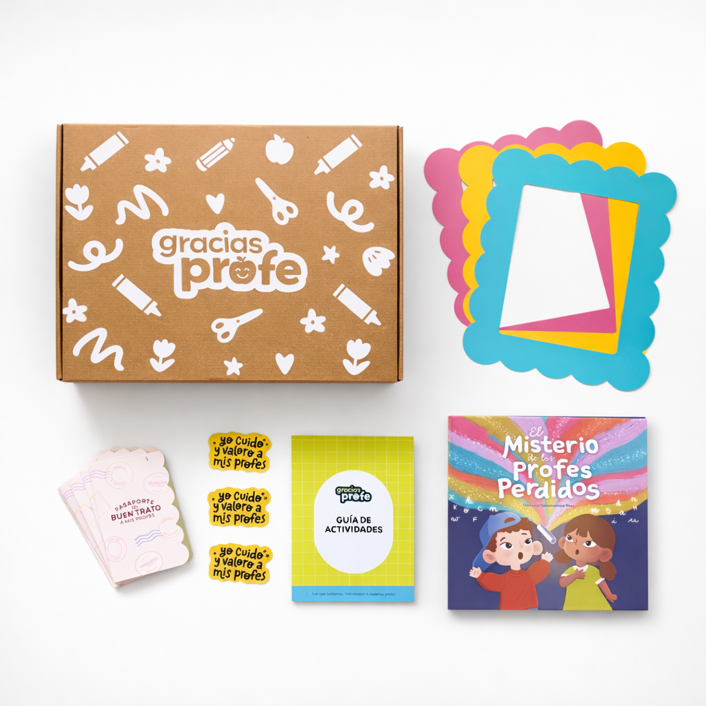
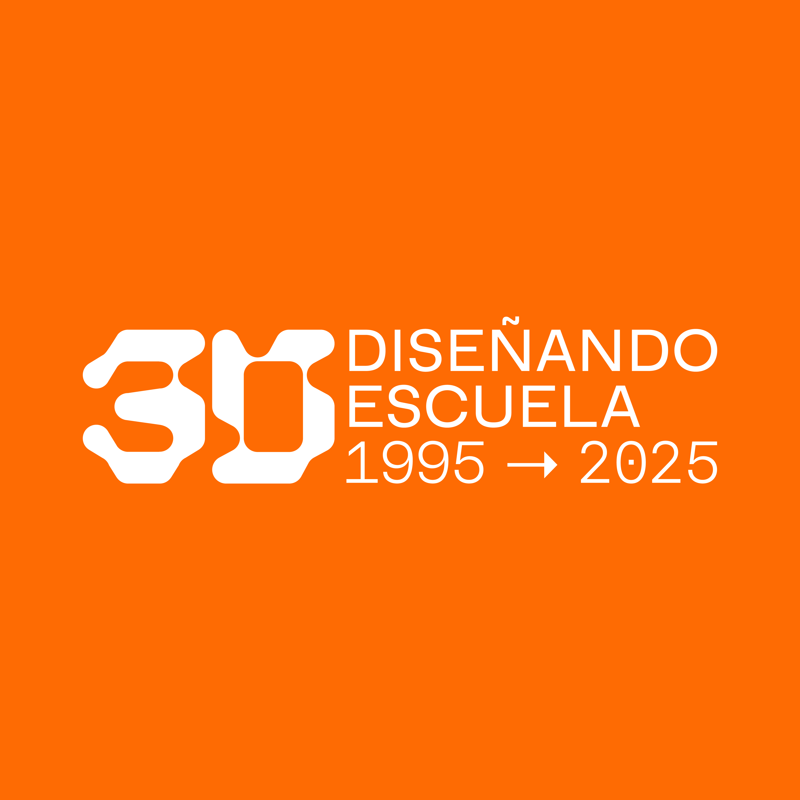
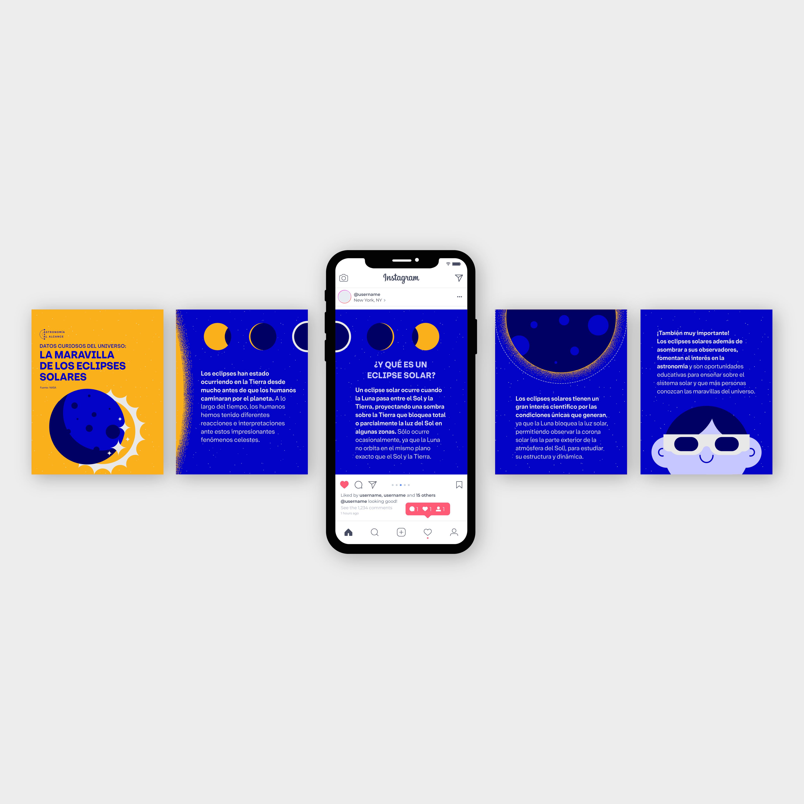
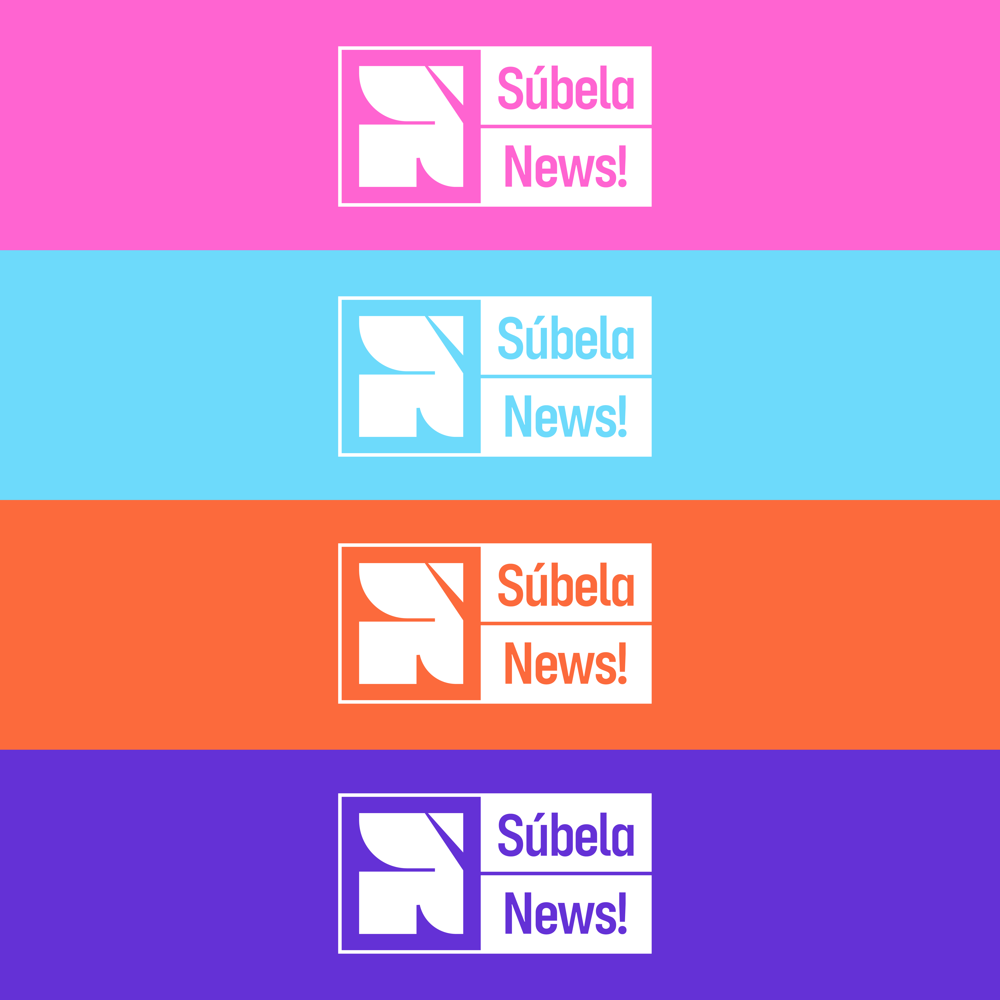
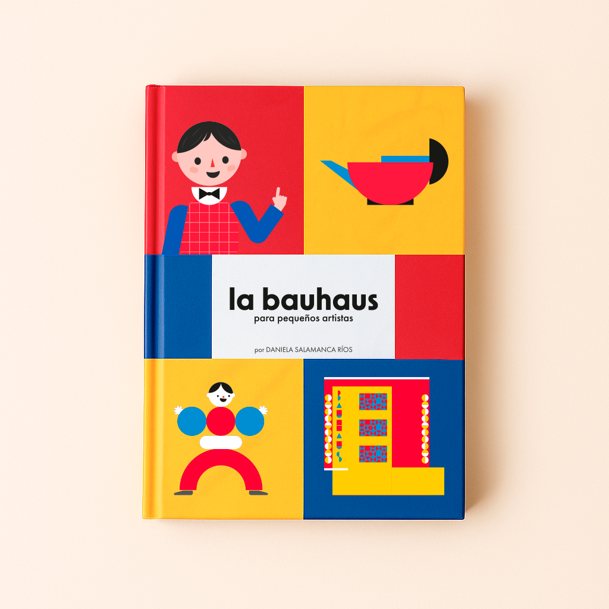
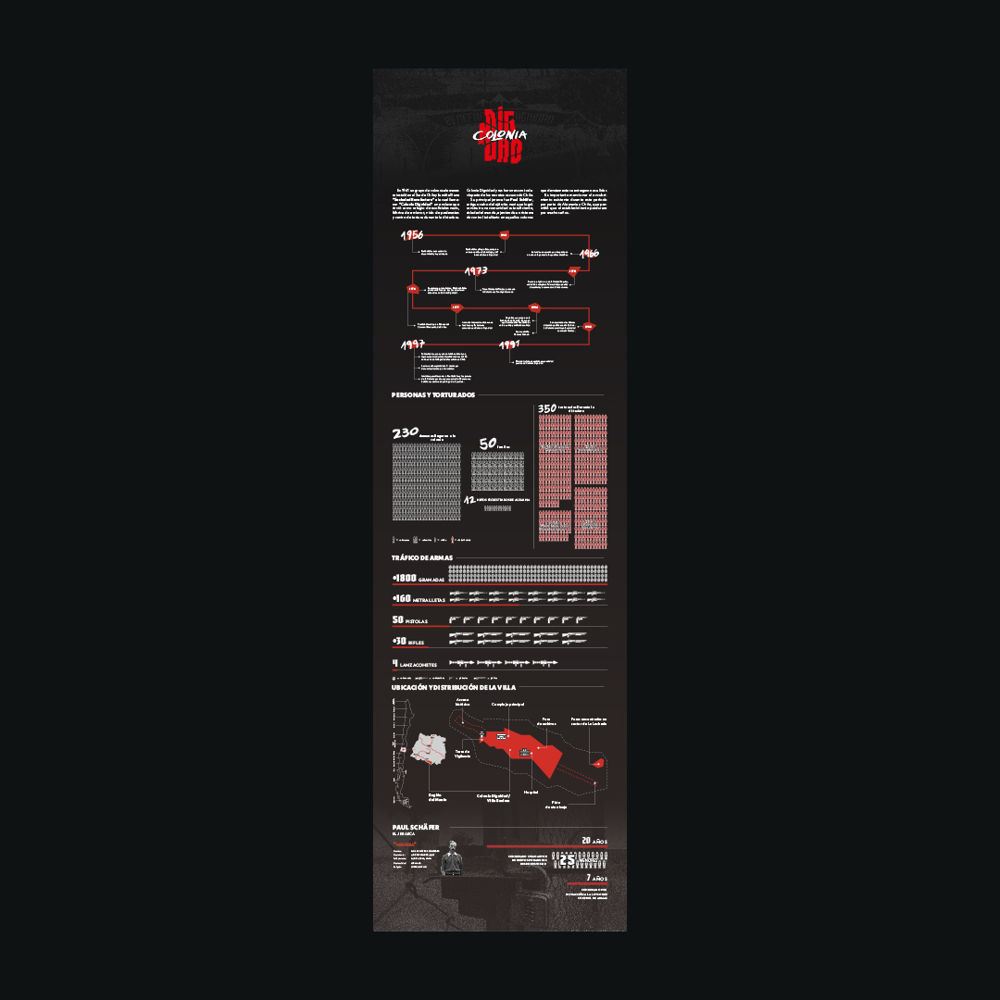
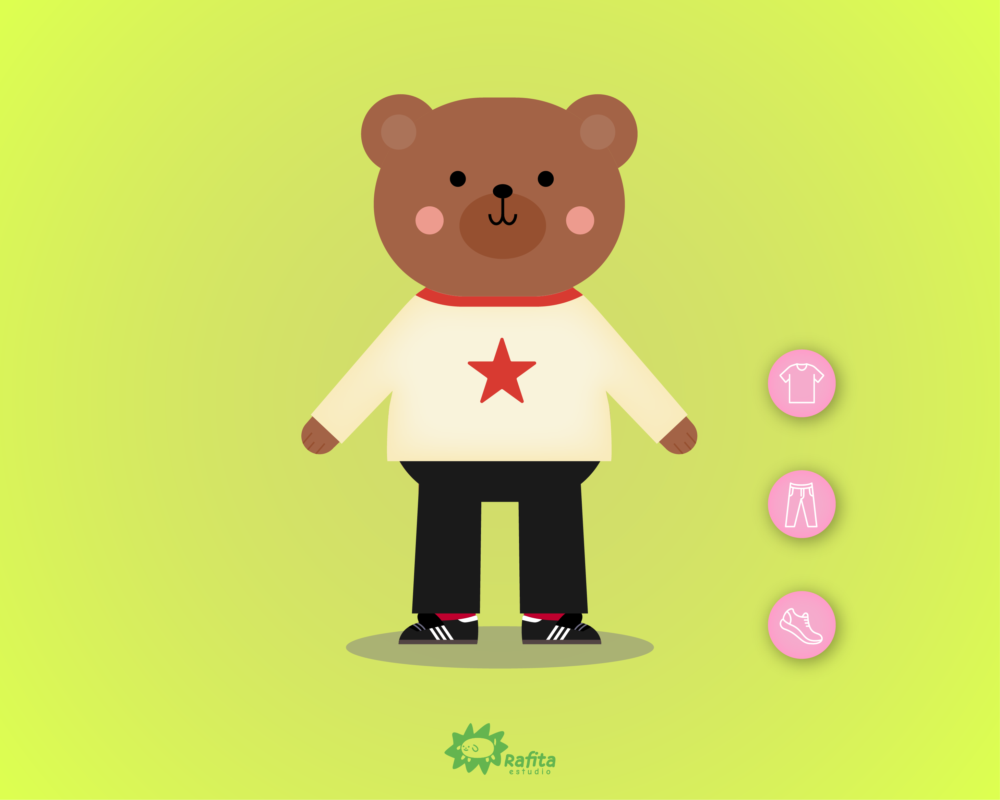
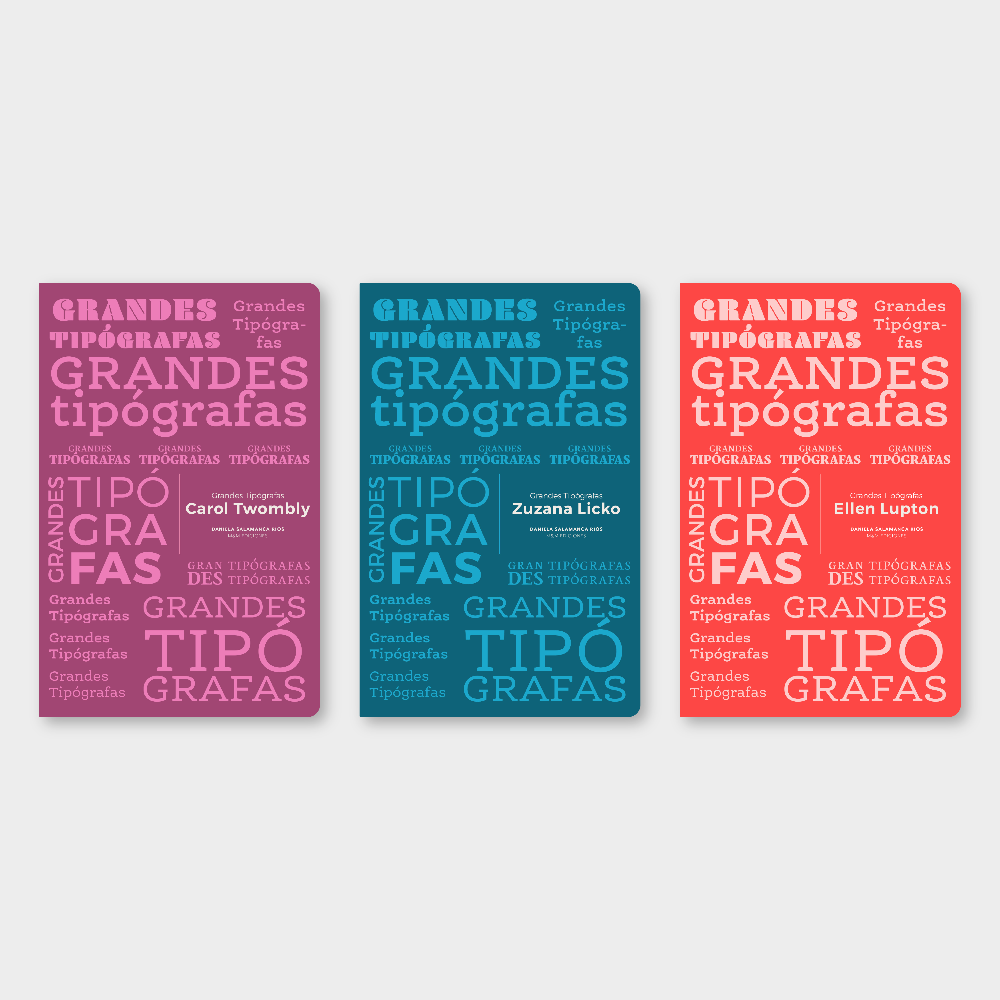

Gracias Profe es un kit educativo integral diseñado para revalorizar la figura del docente y fortalecer el vínculo emocional entre profesores y estudiantes de entre 5 y 7 años. Este conjunto pedagógico consiste en un libro infantil ilustrado titulado El Misterio de los Profes Perdidos y una serie de actividades participativas que invitan a los niños a interactuar directamente con la narrativa, transformando la lectura en una experiencia dinámica y colaborativa.
Los objetivos principales del proyecto son mejorar la percepción social de la labor docente desde la infancia, fomentar la empatía en el aula y entregar una herramienta creativa que facilite la comunicación y el sentido de comunidad en el entorno escolar.
Este proyecto nació como mi proyecto de título de la carrera de diseño, siendo una investigación y propuesta creativa con la cual culminé mi formación académica con distinción máxima.

Diseño de un sistema de identidad visual para el aniversario de 30 años de la Escuela de Diseño UDP, seleccionado como una de las dos mejores propuestas del taller por su coherencia conceptual y solidez visual.

Proyecto editorial que busca hacer la astronomía accesible a todo tipo de públicos, con especial énfasis en la inclusión de personas con discapacidad visual, abarcando desde la definición del estilo gráfico hasta el diseño para redes sociales.

Actualización y fortalecimiento de la identidad visual de Súbela News, el segmento de noticias de Súbela Radio, a través del rediseño de logo, paleta de colores y formatos digitales.

Libro infantil ilustrado que explora el universo de la Bauhaus de manera lúdica y educativa, con ilustraciones vibrantes y textos simples para introducir a los niños al diseño y la arquitectura.

Interpretación visual de la Sinfonía N°9 de Dvořák ejecutada por la Orquesta Filarmónica de Santiago, traduciendo el lenguaje musical en narrativas visuales animadas proyectadas sobre la fachada del teatro.

Reflexión sobre la memoria como herramienta de aprendizaje y resistencia, abordando la historia de Colonia Dignidad a través del diseño y la investigación visual.

Juego interactivo de vestir personajes desarrollado en p5.js, en el marco del curso de Programación Multimedia Creativa.

Colección editorial de tres plaquettes dedicados a destacar la obra y legado de tipógrafas de reconocimiento internacional.

Colaboración para el Día del Skateboarding 2024 con Alameda Beer Company, desarrollando identidad gráfica para una edición especial de cerveza inspirada en la cultura urbana y el espíritu del skate.